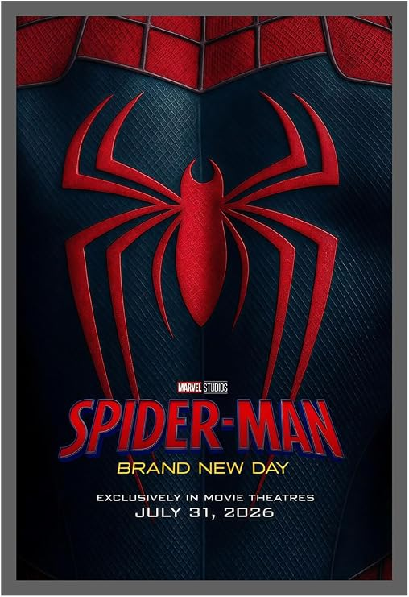

Spider-Man: Brand New Day is one of my favorite movies. It is a superhero movie about Spider-Man and his adventures. I like Spider-Man because he is brave, helpful, and always tries to protect other people.
Spider-Man is a superhero who uses his powers to help people. He can climb walls, swing from buildings, and use his web to move around the city.
The movie shows Spider-Man facing new challenges. He has to make difficult decisions while trying to keep people safe.
The story follows Spider-Man as he continues his life as a superhero. He faces new problems and dangerous situations.
Spider-Man must use his skills and courage to solve these problems. Along the way, he meets different characters and experiences new adventures.
Tom Holland plays the role of Spider-Man. He is the main character of the movie.
Spider-Man is the main superhero in the story. He uses his powers to help people and fight enemies.
There are also other characters in the movie. They are part of Spider-Man's story and adventures.
My favorite part of Spider-Man movies is when Spider-Man swings through the city using his webs.
I also like the action scenes because they are exciting and fun to watch.
I like this movie because Spider-Man is one of my favorite superheroes. I have liked Spider-Man since I was a child.
I also enjoy the story, the characters, and the superhero action. I am excited to see Spider-Man's new adventure.
This is the movie poster:

Movie Title: Spider-Man: Brand New Day
Main Character: Spider-Man
Genre: Superhero
Main Actor: Tom Holland
I think this movie is interesting and exciting. I like the superhero action and the story.
I would recommend this movie to people who like superhero movies and Spider-Man.
Spider-Man is one of my favorite superheroes. I enjoy watching his movies because they have action, adventure, and interesting characters.
I am looking forward to seeing more Spider-Man adventures in the future.
Thank you for visiting my movie webpage!